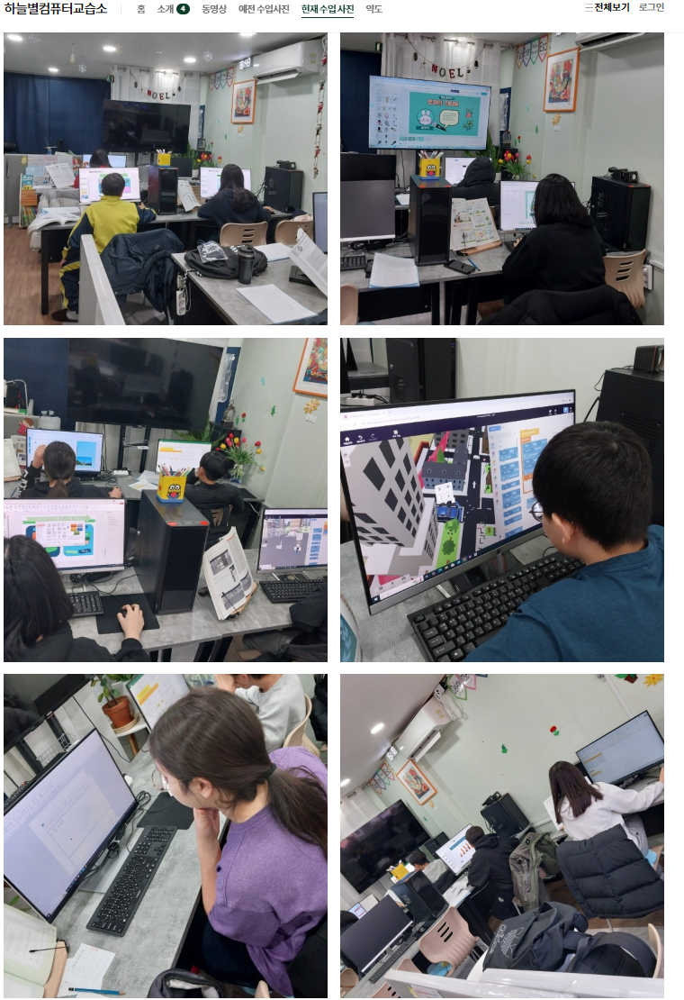
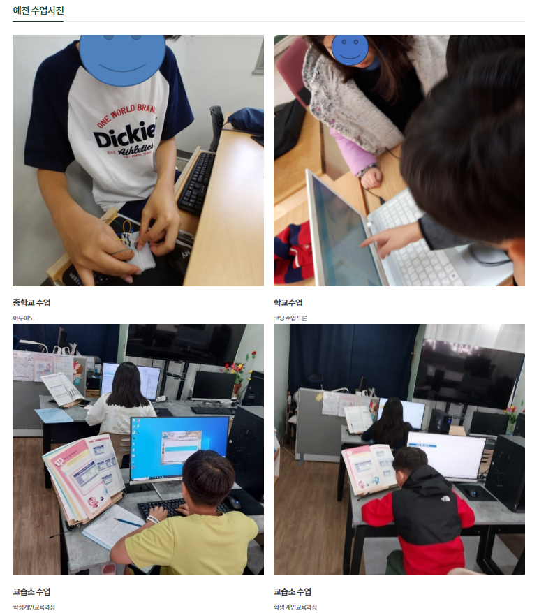
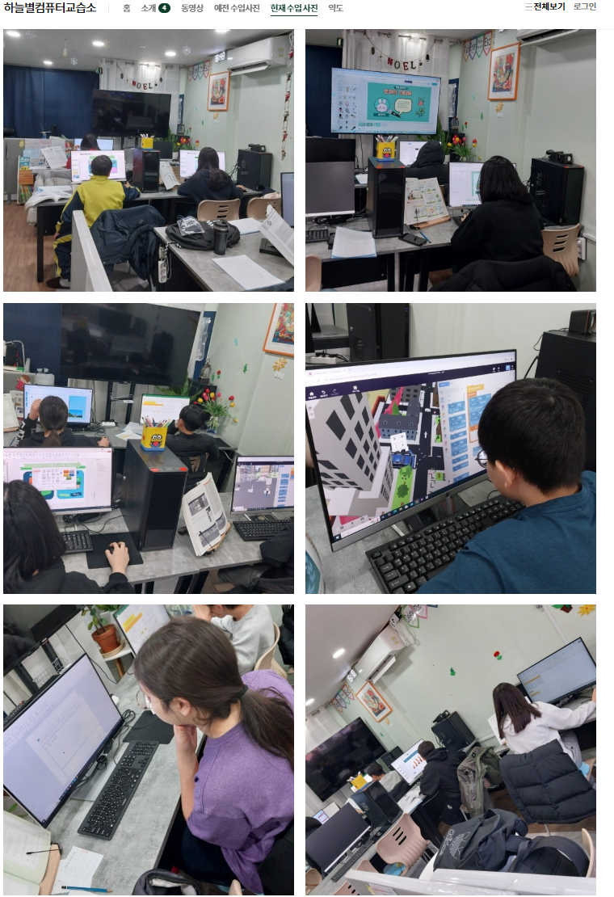
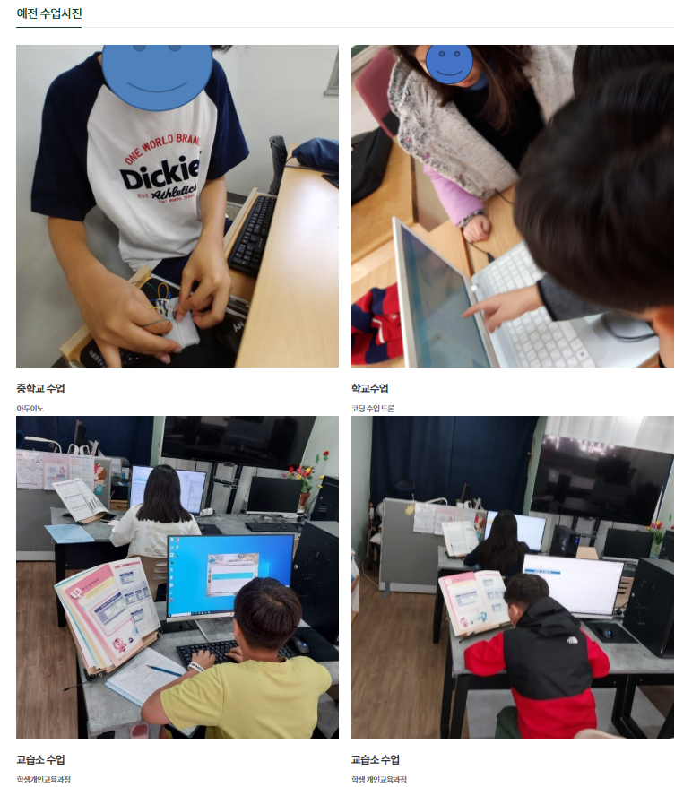

수업 사진 및 영상
하늘별컴퓨터교습소의 실제 수업 장면입니다. 아이들이 코딩, 문서작성, 창의적 활동을 즐겁게 배우고 있습니다.
 
하늘을 향한 배움, 별처럼 빛나는 실력! , 컴퓨터 교육, 믿고 맡기는 하늘별컴퓨터교습소
하늘별 컴퓨터 교습소 원장 선생님입니다
★ 하늘처럼 넓게, 별처럼 빛나는 실력을! 하늘별컴퓨터교습소는 첫 컴퓨터가 되는 아이들에게 잘 맞는 기초연습을 제공하고,학생 한 사람 한 사람의 가능성을 소중히 키워가는 따뜻한 공간입니다. 컴퓨터 기초부터 자격증까지, 꼼꼼하고 친절한 지도로 여러분의 첫걸음을 응원합니다.
★ 감성적이고 따뜻한 수업
별 하나, 꿈 하나.
하늘별컴퓨터교습소는 당신의 배움에 별빛을 더합니다.
처음 컴퓨터를 접하는 아이부터, 새로운 시작을 준비하는 성인까지
정성과 열정으로 함께하는 배움의 공간입니다.
★ 전문적이고 교육 중심
기초부터 실무까지, 컴퓨터 교육의 모든 것
하늘별컴퓨터교습소는 컴퓨터 기초, 코딩, 자격증 취득 등 실용적인 교육을 통해
학생의 디지털 역량 향상을 책임집니다.
작지만 강한 소수 맞춤 수업, 지금 바로 시작하세요!
★ 학생 수준에 맞게 커리큘럼을 진행합니다. 학교 과제 수행과 발표에 도움이 되며 미래세대의 학생들에게 컴퓨터를 활용한 학습을 진행합니다.
하늘별컴퓨터교습소의 실제 수업 장면입니다. 아이들이 코딩, 문서작성, 창의적 활동을 즐겁게 배우고 있습니다.
 
학생 수업 문의를 원하신다면, 아래 버튼을 클릭해 주세요.
💬 카카오톡 문의전화: 010-5545-3133
오전에는 수업 중이므로 오후1시30분 이후 통화가 가능하며 문자나 카카오톡을 남기시면 연락드립니다.